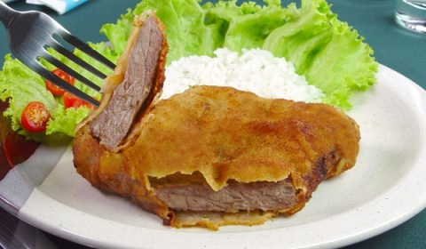

Bife à milanesa 🥩

Descrição
A receita de bife à milanesa é um clássico da culinária! Aprenda como preparar esse bife irresistível e surpreenda-se com a simplicidade e o sabor dessa receita tradicional. Uma opção perfeita para refeições do dia a dia!
Ingredientes
- 1/2 kg de bife patinho, alcatra ou mignon
- farinha de rosca a gosto
- 3 dentes de alho amassados (opcional)
- pimenta-do-reino a gosto
- 3 ovos batidos
- farinha de trigo a gosto
- sal a gosto
Etapas
- Tempere os bifes a gosto e reserve.
- Em um prato fundo, bata os ovos até obter uma mistura homogênea.
- Separe a farinha de rosca e a farinha de trigo em pratos diferentes.
- Passe os bifes na farinha de trigo, depois nos ovos batidos e na farinha de rosca.
- Em uma frigideira, frite os bifes em óleo quente até que fiquem dourados.
- Ao retirar da frigideira, coloque os bifes em papel toalha para que a gordura em excesso seja absorvida.